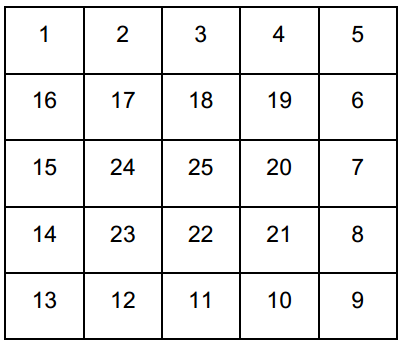

Tùng có một bảng gồm N dòng N cột. Các dòng được đánh số từ 1 đến N từ trên xuống dưới, các cột được đánh số từ 1 đến N từ trái sang phải. Tùng điền bảng này với các con số từ 1 đến NxN theo hình xoắn ốc, bắt đầu từ ô (1, 1). Hình xoắn ốc đi từ ngoài vào trong theo chiều kim đồng hồ. Hình bên phải là ví dụ với bảng N = 5. Hiện tại, Tùng đang ở vị trí của ô số X và Tùng muốn chuyển đến ô của số Y bằng cách thực hiện một số bước di chuyển. Trong mỗi bước, Tùng chỉ có thể di chuyển từ ô số A đến ô số B nếu:
- A và B nguyên tố cùng nhau.
- Ô chứa số A và ô chứa số B có chung một cạnh.
Cho N, X, Y, Tùng muốn biết số bước di chuyển ít nhất để chuyển từ ô số X đến ô số Y.
Dữ liệu nhập:
- Dòng đầu tiên chứa số nguyên T là số lượng test. (1 ≤ T ≤ 10)
- Trong T dòng tiếp theo, mỗi test trên một dòng là 03 số nguyên N, X và Y (1 ≤ N ≤ 1.000, 1 ≤ X, Y ≤ N2).
Dữ liệu xuất:
- Với mỗi test, in ra số bước ít nhất để di chuyển từ ô số X đến ô số Y. Nếu không di chuyển được in ra -1
Thực hiện 3 bước:
- Từ ô số 3 chuyển qua ô số 4 (3 và 4 nguyên tố cùng nhau)
- Từ ô số 4 chuyển qua ô số 19 (4 và 19 nguyên tố cùng nhau)
- Từ ô số 19 chuyển qua ô số 18 (19 và 18 nguyên tố cùng nhau)